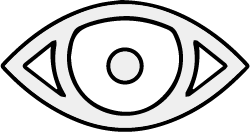

<!DOCTYPE html>
<html lang="en" >
<head>
  <meta charset="UTF-8">
  <title>QBTargetFix</title>
  <link rel="stylesheet" href="https://cdnjs.cloudflare.com/ajax/libs/font-awesome/5.15.1/css/all.min.css">
  <script src="https://code.jquery.com/jquery-3.6.0.min.js"></script>
  <script src="https://code.jquery.com/ui/1.12.1/jquery-ui.min.js"></script>  
</head>
<body>
  <script>
    $( document ).ready(function() {
        $('').insertAfter('#target-eye img:first');
        $('#target-eye img:first').addClass("__web-inspector-hide-shortcut__");
    });
  </script>
</body>
</html>
